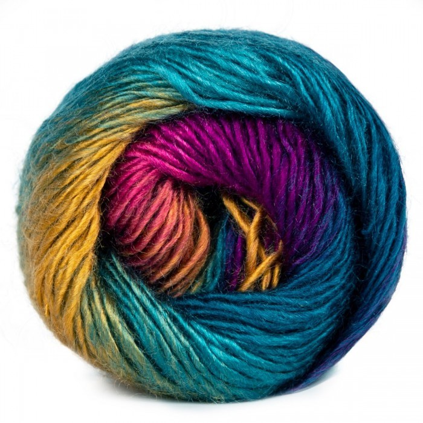

So you want to learn how to crochet? Here are the three basic things you will need to start.
The first important thing you will need to start crocheting are crochet hooks. There are many hooks to choose from and they come in different sizes. Which size you choose is up to you and the project you are working on. Crochet hooks with larger handles are more comforatble, you can see an example below.

The second thing you will need to get started is yarn, this is also very important. Without the yarn you wouldnt be able to make anything. Yarn comes in many differnt colors and fibers, again it is your choice on what type of yarn you want to use.
Lastly, you will need stitch markers. These are especially great for beginners, they help you mark stitches so that you won't have to remember a certain count of stitches in your project. You can see an example of what stitch markers look like below